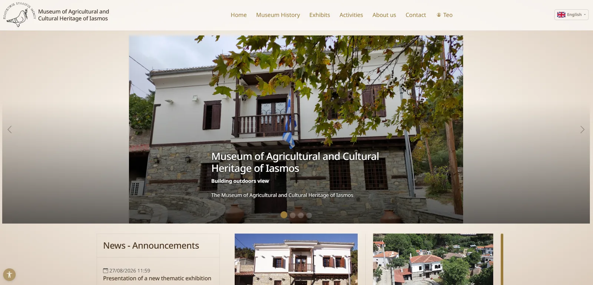
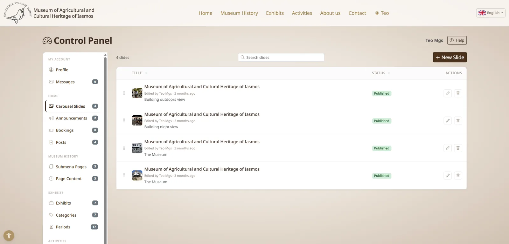

case-study/iasmos-museum
Iasmos Culture Club Museum: a CMS built for non-technical moderators


Public site — bilingual (EL/EN) with staff-managed carousel and announcements
Context
The museum's moderators needed to publish exhibits, events and long bilingual history texts themselves, without technical help and without being able to break anything. Rather than bend an off-the-shelf CMS, I built a moderator dashboard around how they actually work, in Greek and English.
Hard requirements
- Photos anchored to paragraphs. Moderators place photos beside specific paragraphs of long texts by drag and drop. The catch: Greek and English versions have different paragraph counts. One anchor index serves both languages, and an image whose anchor runs past the shorter text falls back to the gallery when the page renders.
- Safe deletion. Moderators can delete anything; only a superuser can restore or purge.
- Privacy by design. Self-hosted, cookie-free analytics with daily-rotating visitor hashes, consent-gated YouTube and Maps embeds, moderator Markdown sanitised with nh3, and django-axes login protection.
- Redesign on request. The client asked for redesigns in late September, close to delivery, and the content model absorbed them.
What broke
- Every image returned 404 (19 August 2026). After a routine pull and rebuild, all media was
gone. An earlier
git rm --cached media/had deleted the files on every checkout except the machine that made the commit. I recovered all 95 files (121 MB) from git history with no data lost and wrote a recovery runbook. Media is now covered by the documented backup and restore procedures alongside the database. - Blank English pages (1 October). Content is written in Greek first and translated later. Untranslated fields fell back to English, which was empty. I changed the fallback to Greek, so visitors see the original text instead of a gap.
- A hidden consent banner (31 August). Ad blockers were hiding it because of its cookie-consent naming. Renaming it to a neutral site notice brought it back.
- Oversized images (10 October). Opaque screenshots were stored as large PNGs. Uploads now
convert to JPEG unless they actually use transparency, and a
compress_mediamanagement command fixed the files already stored.
Result
355 automated tests, documented backup and restore for the database and media, and a site the museum team uses daily. I maintain it on an ongoing basis.